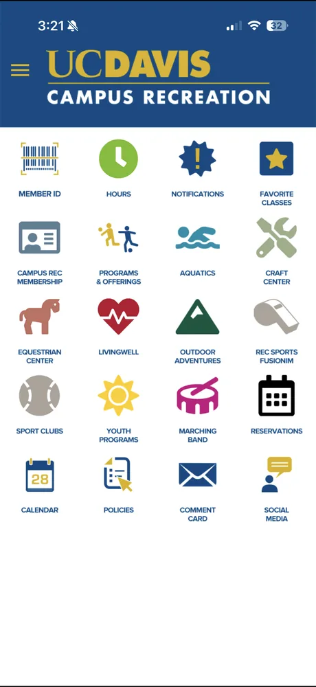
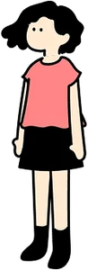
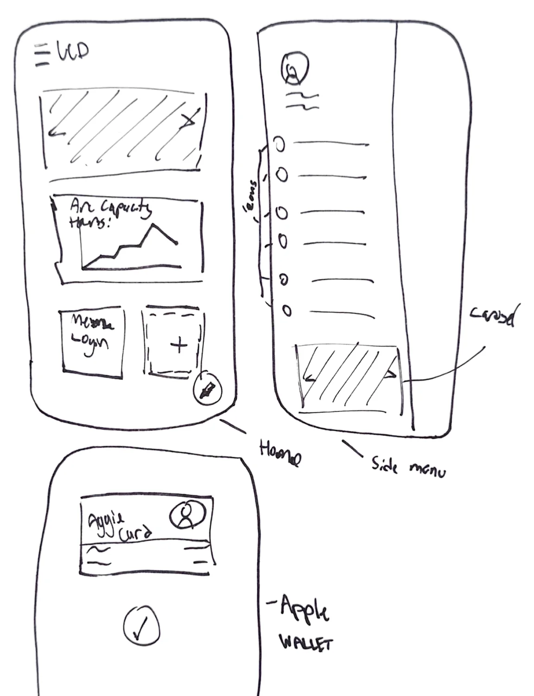
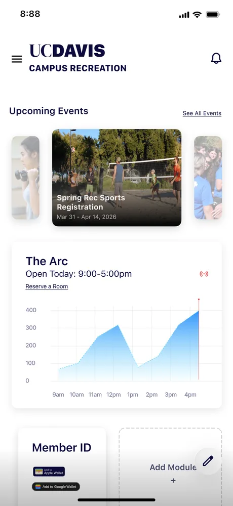
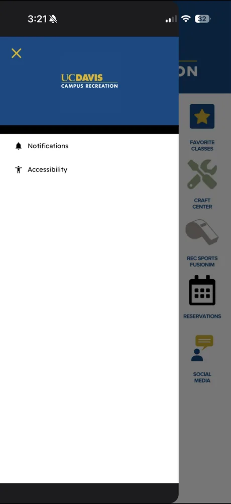
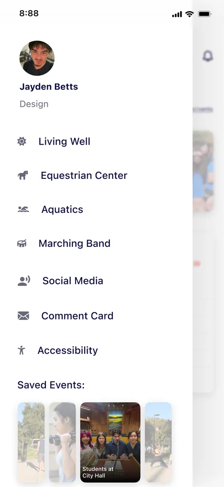
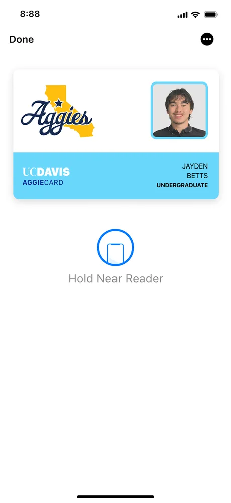
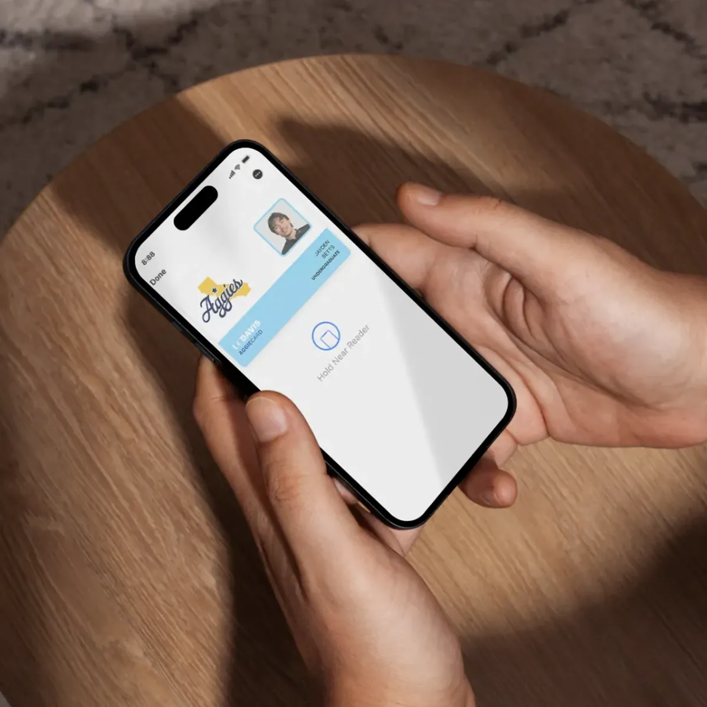
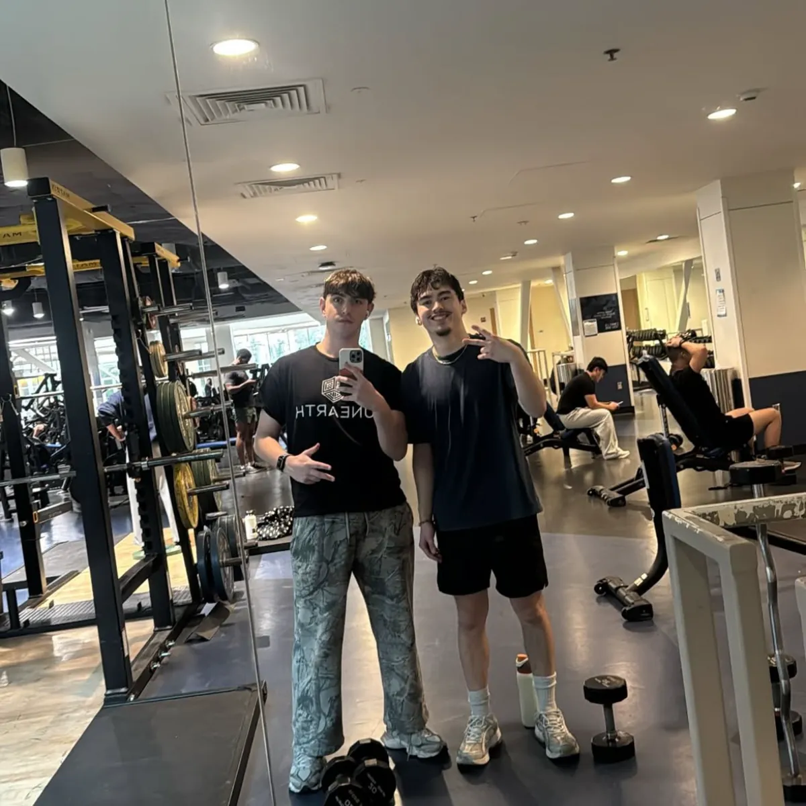

UC Davis RecPutting the gym ID in Apple Wallet, and killing the login.

- Role
- Product designer
- Team
- Solo designer
- Timeline
- 3 days
- Key idea
- Member ID in Apple Wallet
- Year
- 2026
The UC Davis Recreation app should be the easiest way to get into the gym and see what is happening on campus. Instead it was a barrier: an unflattering, hard-to-navigate interface that made you log in every single time. Over three days I redesigned it, from lo-fi to hi-fi, into something any student could use in seconds, no matter their major.
A project I built for myself.
This was a personal project, so every part of it is mine: the interviews, the wireframes, the visual design, and the one idea I am proudest of, moving the gym ID into Apple Wallet. I did it because I use this app, and it frustrated me.
The app was a barrier, not a tool.
I use the UC Davis Rec app when I forget my wallet, and every time it makes me log in again just to pull up the ID that gets me through the gym door. The rest is a wall of identical icons with no hierarchy, key things like hours and live gym capacity buried or missing, and a top-heavy layout that leaves half the screen empty. UC Davis wants this to be a hub for campus life. Right now it acts more like a barrier than a tool.

Students only opened it to scan in.
I ran three interviews with students who use the app, and the pattern was immediate: everyone used it for one thing, scanning into the ARC, and almost nothing else. “It’s kinda confusing to navigate.” “I only use it to scan in.” The friction wasn’t just annoying, it hid everything else UC Rec offers behind icons no one taps.

“It’s kinda confusing to navigate, sometimes it takes me a while scrolling through it.”Student, 2nd year
“I just use the app for scanning into the ARC when I don’t have my card.”Student, 3rd year
“I only use it to scan in. It could use a format change.”Student, 1st year
The friction between a student and the door was mine too. So I started sketching in low fidelity, blocking out a real hierarchy and a side menu before touching color or type.

Built around what students actually use.
I rebuilt the home screen around a clear hierarchy and modules students can cater to their own interests, instead of a grid of buttons most will never press. Events sit up top in a carousel, live gym capacity is right there (easy to add, since everyone already scans in), and the tabs no one used move into a side menu you pull up when needed.



The gym ID lives in Apple Wallet.
Instead of logging in every time, I moved the Member ID into Apple Wallet. Hold your phone near the reader and you’re in, as fast as Apple Pay. No login to fight, no password for the app to store: the barcode just lives in Wallet, where students already keep the things they trust. It turns the app’s biggest point of friction into its fastest interaction, the kind of clever reuse of an existing behavior that I love in design.
Transmit Security · LendingTree, 2025

Three days of design opened a door.
With only three days, the constraint forced me to prioritize: connect students to resources and kill the login friction, rather than polish every deep screen. With more time I’d design the Aquatics and Equestrian screens and pitch the ARC on making the Apple Wallet integration real.
I submitted this project to the Design Interactive cohort on campus. It landed me an interview, and a spot in the program, where I went on to design Bearings. A three-day redesign I made out of my own frustration turned into the thing that opened the next door.

